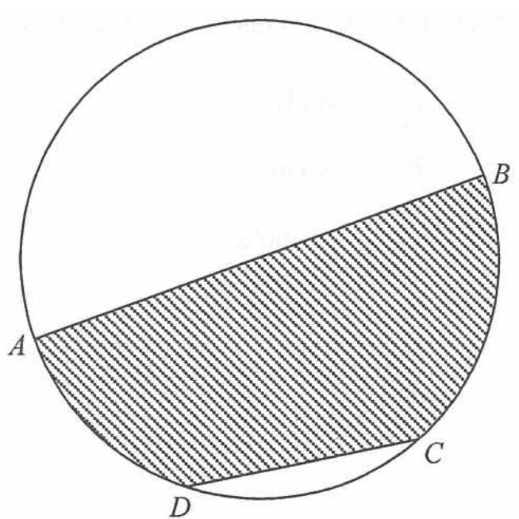

In the figure, \(AB\) is a diameter of the circle \(ABCD\). If \(AB = 12\text{ cm}\) and \(CD = 6\text{ cm}\), then the area of the shaded region is

\(AB\) is a diameter of the circle, \(AB = 12\text{ cm}\).
\[ r = \frac{AB}{2} = \frac{12}{2} = 6\text{ cm} \]
So \(OA = OB = OC = OD = 6\text{ cm}\).
Given \(CD = 6\text{ cm}\) and \(OC = OD = 6\text{ cm}\), all three sides are equal:
\[ \triangle OCD \text{ is equilateral} \;\Rightarrow\; \angle COD = 60^\circ \]
Since \(OC = OD\), triangle \(OCD\) is isosceles, and the perpendicular from \(O\) to \(CD\) bisects \(\angle COD\).
\[ \angle COM = \frac{60^\circ}{2} = 30^\circ \]
Let \(M\) be the foot of the perpendicular from \(O\) to \(CD\). In right-angled triangle \(OCM\):
\[ OM = OC\cos\angle COM = 6\cos 30^\circ = 6 \times \frac{\sqrt{3}}{2} = 3\sqrt{3}\text{ cm} \]
Also \(CM = 6\sin 30^\circ = 3\text{ cm}\), so \(CD = 2 \times 3 = 6\text{ cm}\) ✓
Since \(A\), \(O\), \(B\) lie on the same straight line (diameter \(AB\)):
\[ \angle AOD + \angle DOC + \angle COB = 180^\circ \]
\[ \angle AOD + \angle BOC = 180^\circ - 60^\circ = 120^\circ \]
The two shaded sectors \(OAD\) and \(OBC\) together sweep \(120^\circ\).
The shaded region = sector \(OAD\) + sector \(OBC\) + triangle \(OCD\):
\[ \begin{aligned} \text{Area} &= \pi(6)^2 \times \frac{120^\circ}{360^\circ} + \frac{1}{2}(CD)(OM) \\[4pt] &= 36\pi \times \frac{1}{3} + \frac{1}{2}(6)(3\sqrt{3}) \\[4pt] &= 12\pi + 9\sqrt{3}\text{ cm}^2 \end{aligned} \]
This matches option D.
Question. In the figure, \(O\) is the centre of a circle of radius \(8\text{ cm}\). \(C\) and \(D\) lie on the circle with \(CD=8\text{ cm}\). Find the total area of the shaded region, which consists of the sector \(OCD\) and \(\triangle OCD\).